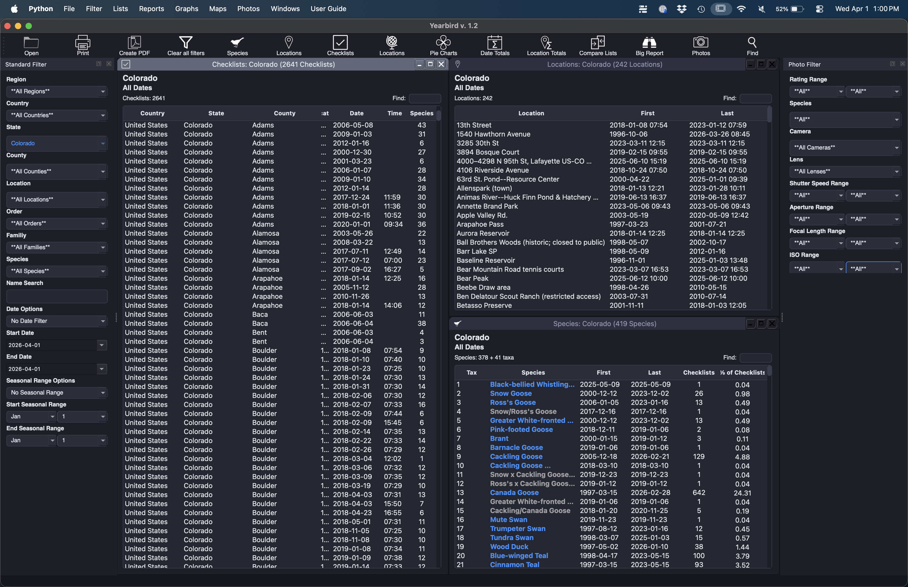
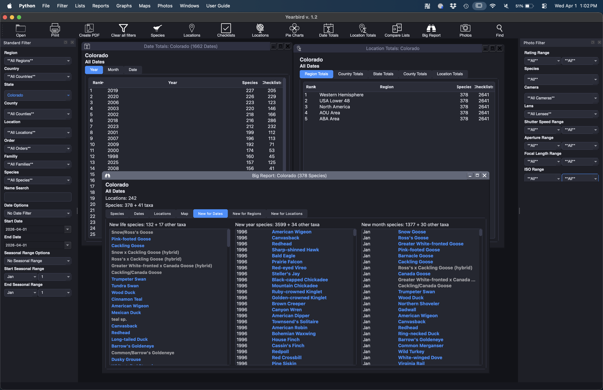
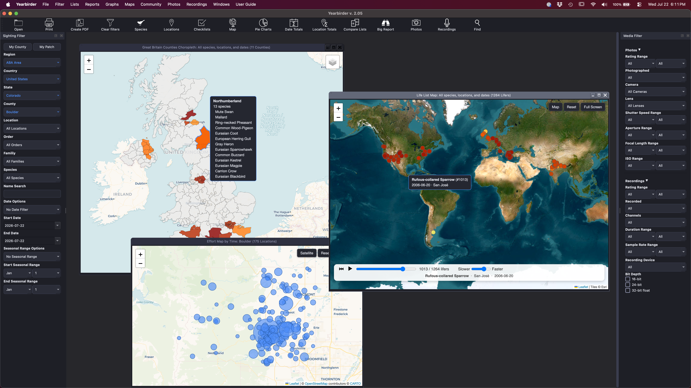

The main window: set a filter once, then open any list, chart, or map from it.
eBird is built for collecting and sharing sightings across the global birding community. Yearbirder helps you explore your own personal sightings in depth — through sortable lists, totals, more than 30 chart types, and more than a dozen interactive maps, all filtered any way you choose.
The main window: set a filter once, then open any list, chart, or map from it.
You can generate any variety of lists: county lists, state lists, date lists, lists of checklists, lists of locations — all filterable however you see fit. Create custom lists, like every sparrow you've seen on an April day in San Francisco County between 2008 and 2017, or a list of every location where you've seen a Western Kingbird.

Date Totals shows your species counts by year, month, and individual date. Location Totals breaks down your counts by region, country, state, county, and named location. The Big Report pulls it all together in a tabbed view — species, dates, locations, and checklists at once.

Numbers alone don't tell the story. Yearbirder turns your data into charts that make patterns visible at a glance — from how fast you found new species each year to which locations dominate your checklist count.

See where you've been, how long you've spent there, and what you've found. Every map is zoomable and pannable, generated from your own eBird data.
